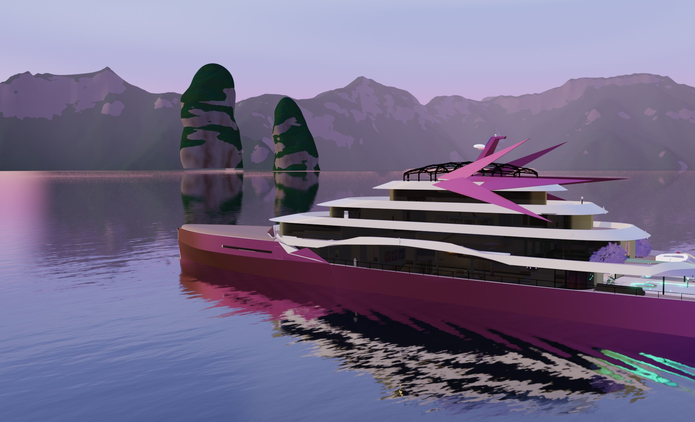

Projets d'animation
- Dessin animé
- Animation 2D
- Décors 3D
- Shaders procéduraux
- 100% Blender
« Princesse Cation » est un projet de court métrage d'animation commencé en octobre 2018

L'univers coloré et poétique est représenté par un mélange unique de 2D et 3D


Les personnages sont dessinés en 2D. Cependant, une version 3D est utile : Elle donne des informations sur l'échelle, les proportions, les couleurs qui apparaissent sous certaines lumières ect...

Les décors serons eux, en 3D


Pour être mieux intégrée, la 2D réagit à la lumière et de nombreux effets visuels lui sont appliqués